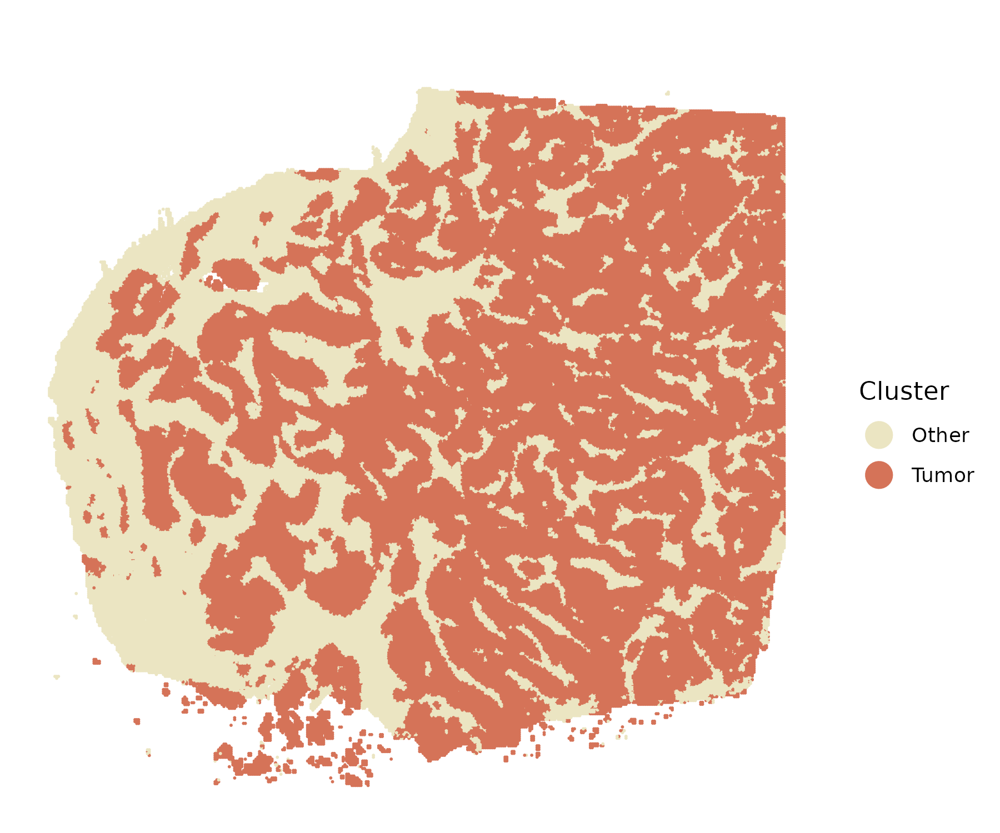
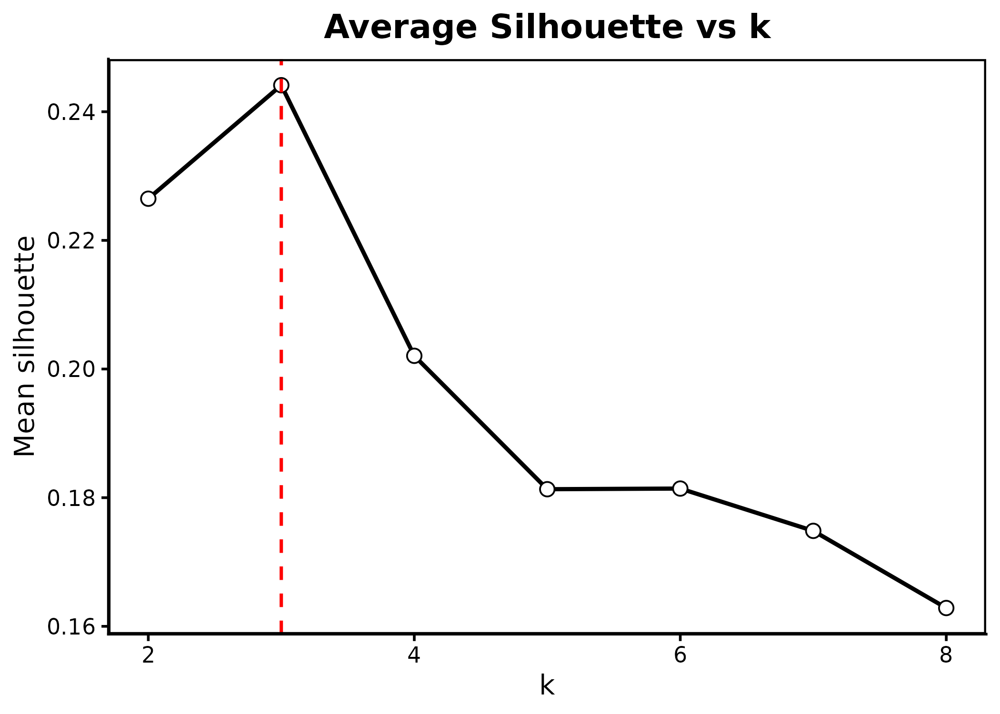
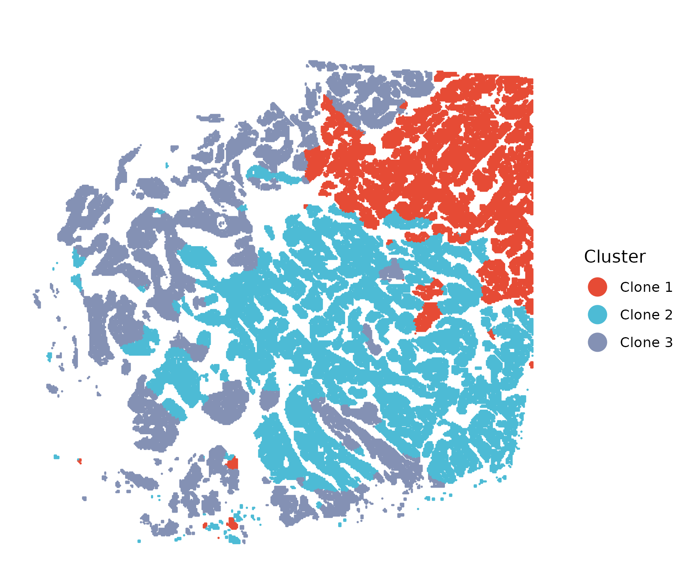
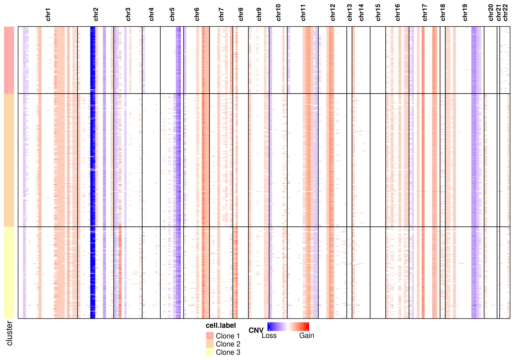

Intro: VisumHD Breast Cancer Dataset
Chenxuan Zang: VisumHD Breast Cancer Dataset
Source:vignettes/Intro_to_highSpaClone.Rmd
Intro_to_highSpaClone.Rmd
library(highSpaClone)
library(ggplot2)
library(dplyr)
#>
#> Attaching package: 'dplyr'
#> The following objects are masked from 'package:stats':
#>
#> filter, lag
#> The following objects are masked from 'package:base':
#>
#> intersect, setdiff, setequal, unionLoading required input data
highSpaClone requires three types of input data:
- Spatial transcriptomics count data (row: gene, column: cell).
- Spatial location information: spatial coordinates for each cell,
with three columns (cell.id, x, y). The row names of location must match
with the column names of counts.).
- Cell annotation information: cell type annotation information, should contain two columns, (cell.id, cell.label). Can be a data.frame, .csv or .txt file.
data <- readRDS('./visiumhd_breast_data.rds')
counts <- data$counts
location <- data$spatial_location
annotation <- data$annotationCreate highSpaClone object
This step is to create a highSpaClone object. The most important input arguments are:
-
counts: Gene-by-cell raw count matrix. Ensure to contain the row/column names. -
location: A data.frame or matrix of spatial coordinates for each cell with three columns representing the cell id, x and y coordinates of the spatial location (The column names must contain “cell.id”, “x” and “y”). -
annotations_file: Cell type annotation file with two columns representing the cell id and cell type/cluster of each cell. Must be a data.frame, .csv or .txt file. -
gene_order_file: The gene order file, contains chromosome, start, and stop position for each gene. If not provided, the function uses the built-in hg38 annotation. Users may upload/provide a custom file to replace the default. -
min_avg_expression: Minimum average expression per gene (default: 0.01). -
min_gene_counts: Minimum total counts per cell (default: 100). -
project: Project name.
obj <- createObject(counts=counts,
location=location,
annotations_file = annotation,
gene_order_file=NULL,
min_avg_expression=0.01,
min_gene_counts=100,
project='visumhd.breast')
#> Filtered genes based on average expression threshold: 6107 genes removed.
#> Remaining genes after filtering: 11978 genes.
#> Filtered cells based on minimum gene counts threshold: 385 cells removed.
#> Remaining cells after filtering: 999 cells.
#> Removed 0 genes that did not match the gene order file.
#> Remaining 11609 genes after matching with the gene order file.Main function
Smooth by chromosome
This step is to smooth gene expression by gene order within each chromosome, which improves CNV signal continuity and suppresses gene-specific noise. The most important input arguments are:
-
obj: highSpaClone object. -
window_size: Size of the running-mean window (in genes) used within each chromosome (default: 101). Must be an integer. -
step: Number of genes in a bin (default: 50). Must be an integer. -
use_chunk: Whether to split cells into smaller subsets (chunks) during computation (default: TRUE). -
chunk_size: The number of cells per chunk when chunking is enabled (default: 5000). -
parallel: IfTRUE, chunks are processed in parallel to accelerate runtime (default: FALSE).
# smooth gene expression by chromosome
smooth_obj <- smooth_expr(obj = obj,
window_size = 101,
step = 50,
use_chunk = T,
chunk_size = 100,
parallel = T
)
#> Normalization time: 1.348653 seconds
#> Working with sparse matrix format (keeping sparse)
#> Total cells: 118697
#>
#> === Chunking mode enabled ===
#> Processing in chunks of size 5000 ...
#> Total chunks: 24
#> === Parallel processing enabled ===
#> Requested cores: 4 (max_cores limit: 4 )
#> Estimated memory usage: ~ 13.26 GB
#> Windows system detected: using parLapply
#> Using 4 cores
#> Processing chunk 5 of 24
#> Processing chunk 10 of 24
#> Processing chunk 15 of 24
#> Processing chunk 20 of 24
#> Parallel processing completed.
#> Combining results...
#> Combining dense matrices...
#> Result class: matrix
#> Result dimensions: 118697 x 190
#> Calculating chromosome positions...
#>
#> Storing results in object...
#> Results successfully stored.
#>
#> ========================================
#> Total running time: 3 minutes
#> ========================================Identify tumor cells (optional)
The FindTumor() function identifies tumor cells based on
CNV profiles when no prior tumor annotations are available. This
function performs reference-guided tumor segmentation using the smoothed
highSpaClone object.
It requires users to specify the normal (reference) cell population, which can be provided in either of the following forms:
-
ref: A character vector of reference cell type labels. -
ref.id: A character vector of reference cell IDs.
Only one of these arguments needs to be provided.
# Tumor segmentation
obj <- FindTumor(smooth_obj,
ref=c("B Cells", "CD4+ T Cells", "CD8+ T Cells",
"Macrophages 1", "Macrophages 2", "Endothelial"))
#> ========================================
#> Start Tumor Annotation...
#> ========================================
#> CNV matrix dimensions: 190 x 118697
#> Reference cell types: B Cells, CD4+ T Cells, CD8+ T Cells, Macrophages, Endothelial
#> Number of reference cells: 23995
#> Iteration 1 / 500
#> Iteration 25 / 500
#>
#> Converged at iteration 30
#>
#> Iteration time: 6.5 minutes
#>
#> ========================================
#> Tumor annotation completed!
#> Total time: 6.5 minutes
#> ========================================
# Visualization
colors <- c("#ebe5c2", "#D57358")
spatialplot(obj, colors=colors, point_size = 0.01, use_coord_flip=T)
Suggest the number of subclones (optional)
The number of tumor subclones must be pre-specified. If there is no
prior knowledge, we provide the function suggest_k, which
recommends an appropriate value for K based on a Silhouette score that
integrates both CNV and spatial information. The most important input
arguments are:
-
obj: smoothed highSpaClone object. -
ref: A character vector of reference cell type labels. -
tumor: A character vector of tumor cell type labels. -
k_range: Integer vector of K values to evaluate. -
n_sub: Max number of cells to subsample for evaluation (default: 5000). -
alpha: A number bewtween 0 and 1. Control the weight of CNV in clustering.
# Suggest the number of subclones
suggest_k(
obj=smooth_obj,
ref=c("B Cells", "CD4+ T Cells", "CD8+ T Cells",
"Macrophages 1", "Macrophages 2", "Endothelial"),
tumor="Invasive Tumor",
k_range = 2:8,
n_sub = 500,
alpha = 0.7,
seed = 123,
out_dir = "figs_k"
)
#> Suggested K by average silhouette = 3 (mean=0.244)
Spatial CNV inference and subclone detection
The FindClone() function performs spatial CNV inference
and tumor subclone identification based on CNV patterns, enhanced by
spatial regularization. After tumor cells are identified, this function
clusters them into subclonal populations that share similar CNV states
while also preserving spatial continuity.
Users must define a reference (normal) cell population using either:
-
ref: A character vector of reference (normal) cell type labels, or -
ref.id: A character vector of reference cell IDs.
All non-reference cells are treated as tumor cells by default. Alternatively, users may explicitly specify the tumor population via:
-
tumor: A character vector of tumor cell type labels, or -
tumor.id: A character vector of tumor cell IDs.
The parameter lambda controls the strength of spatial
smoothing, encouraging neighboring cells to remain in the same subclone
if supported by CNV evidence. The number of subclones to infer is set by
K, allowing flexible modeling of tumor heterogeneity.
# Spatial CNV inference and tumor subclone detection
obj <- FindClone(obj=smooth_obj,
ref=c("B Cells", "CD4+ T Cells", "CD8+ T Cells",
"Macrophages 1", "Macrophages 2", "Endothelial"),
tumor="Invasive Tumor",
K=3,
lambda=1)
#> ========================================
#> Running highSpaClone...
#> ========================================
#>
#> [Step 1] Preparing data...
#> CNV matrix dimensions (genes x cells): 190 x 118697
#> Reference cell types (ref): B Cells, CD4+ T Cells, CD8+ T Cells, Macrophages, Endothelial
#> Reference cell number: 23995
#> Tumor cell number: 65579
#>
#> [Step 2] Initializing matrices...
#>
#> [Step 3] Starting iterative optimization...
#> Iteration 1 / 500
#> Iteration 25 / 500
#> Iteration 50 / 500
#>
#> Converged at iteration 57
#>
#> Iteration time: 8.07 minutes
#>
#> [Step 4] Storing results...
#> Results stored in object.
#>
#> ========================================
#> CNV inference and tumor subclone detection completed!
#> Total time: 8.07 minutes
#> ========================================
# Visualization
colors <- c("#E64B35", "#4DBBD5", "#8491B4")
spatialplot(obj, colors=colors, point_size = 0.01, use_coord_flip=T)
Visualize CNV heatmap
Visualize subclonal CNV patterns by heatmap:
# Visualize CNV heatmap
log.cnv <- log2(obj@cnv.data)
log.cnv[log.cnv > -0.5 & log.cnv < 0.5] <- 0
breasthd <- list(
cnv.data = log.cnv,
annotation = obj@cluster,
chr_pos = obj@chr_pos
)
cnv_heatmap(
cnv.obj=breasthd,
groupby = "cell.label",
min_value = -3,
max_value = 3,
show = TRUE,
save = TRUE,
outfile = "breasthd_heatmap.png"
)